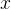
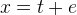
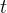
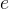
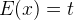
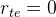
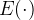
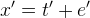
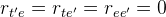

| テスト理論 |
| テスト理論 |
観測値について、以下のようなモデルを考える。
|  | (24) |
ここで、を真値、を観測に伴う偶然的な誤差とする。 ただし、
|  | (25) | ||
|  | (26) |
とする。は期待値を表す。 つまり、真値は同条件下においてを多数回測定したときの平均である。 このとき、誤差は互いに相殺し合って、平均は0となる。
誤差は偶然的に変動するので、その他のいかなる成分とも相関関係を持たない。 従って、別の観測値があったとしても、である。
このような測定モデルにもとづいてテストの性質を議論する理論を、古典的テスト理論という。
| テスト理論 |